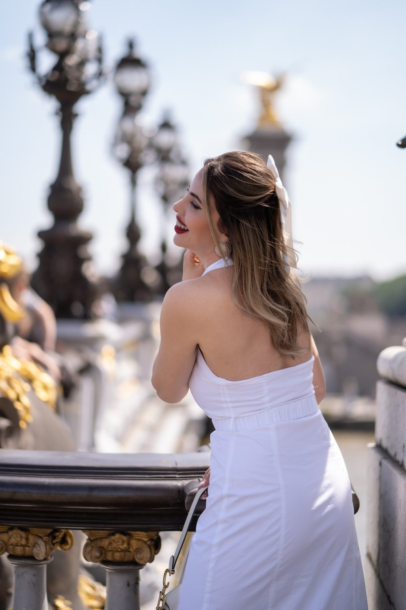
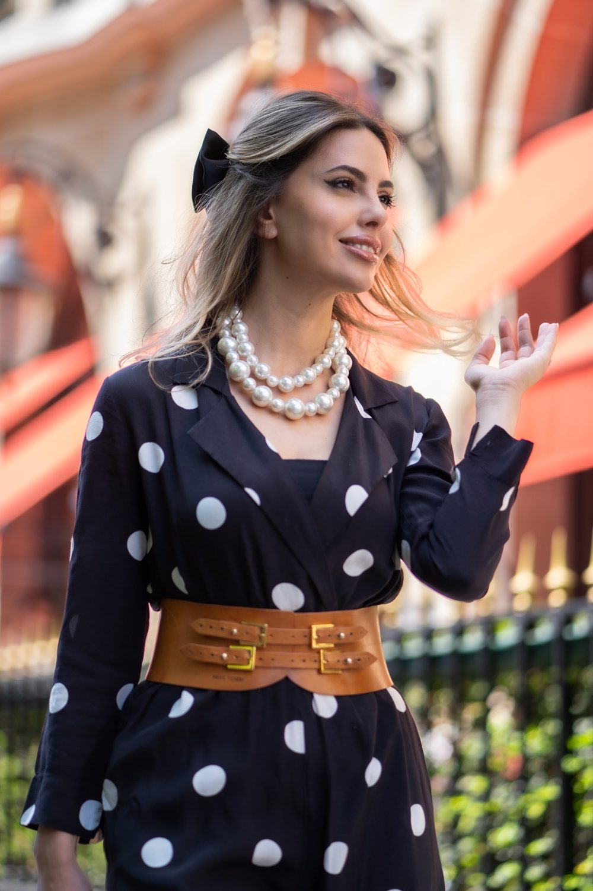

Portrait solo à Pontoise
Médiéval, vallonné, avec des vues sur l'Oise. Un portrait de vous, pour vous : un beau jour, une envie, un cap passé. Une séance solo se vit comme une promenade où vous reprenez la place centrale. Nous vous proposons de commencer à Cathédrale Saint-Maclou, puis de poursuivre à Musée Pissarro.

Où faire votre shooting
Un shooting solo à Pontoise suit un parcours à pied : le Quai de l'Oise, le Musée Pissarro puis le Jardin des terrasses. Nous partons des berges, entre les ponts, pour une marche lente qui délie les épaules. Le Musée Pissarro, demeure d'un peintre de paysages, inspire des portraits plus posés, presque picturaux. Puis nous grimpons aux terrasses : vent dans les cheveux, regard vers la vallée, une séquence vidéo où vous reprenez toute la place.
Sur place
Médiéval, vallonné, avec des vues sur l'Oise. Les terrasses ouvrent sur la vallée en fin d'après-midi.
La séance sert aussi pour un book d'artiste, une présence en ligne, un profil de réseaux ou simplement un cadeau pour vous-même. Une courte vidéo façon portrait filmé met en scène votre voix, votre énergie.
Apportez deux tenues et changez entre le quai et le centre ancien : le contraste entre l'eau et la pierre médiévale varie naturellement l'ambiance. Arrivez quelques minutes en avance pour profiter du calme des berges avant de commencer.
À Pontoise, vous êtes à RER C Pontoise : nous préparons l'itinéraire entre les lieux avec vous.
Nos lieux pour cette séance
Cathédrale Saint-Maclou
Façade gothique. Une grande façade ou un monument pour un portrait plus graphique.
Musée Pissarro
Hôtel particulier.
Jardin des terrasses
Vue sur la vallée. Un jardin ou un parc pour un portrait doux et lumineux, avec de la verdure derrière vous.
Quai de l'Oise
Berges et ponts.



Avant de nous écrire
Où faire un shooting photo solo à Pontoise ?
Pour un shooting photo solo à Pontoise, les berges du Quai de l'Oise conviennent à une séance détendue, tandis que les ruelles médiévales et le Jardin des terrasses apportent du relief. Nous construisons le parcours selon l'image que vous souhaitez donner.
Je suis mal à l'aise devant l'objectif, une séance solo à Pontoise est-elle adaptée ?
Oui, une séance portrait solo à Pontoise se vit comme une promenade : nous parlons, nous marchons, et les photos viennent en chemin. Dites-nous ce que vous aimez ou non dans votre apparence, nous adapterons les angles et les cadrages.
Comment venir à Pontoise ?
RER C Pontoise. Nous nous déplaçons avec notre matériel photo et vidéo.
Livrez-vous des retouches poussées ?
Nous faisons une retouche naturelle. Une retouche plus poussée peut être discutée sur devis.
Parlons de votre mariage
Demander un devisSolo ailleurs en Île-de-France
© Le Couple Photographe · Photographe de mariage Paris & Île-de-France · Mis à jour le 10 octobre 2026
Demander un devis